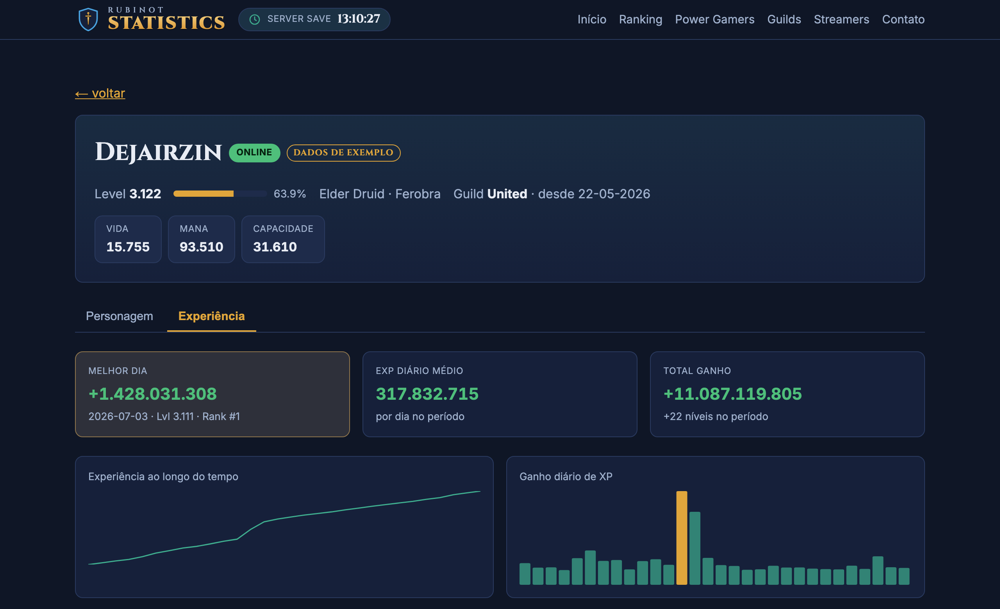
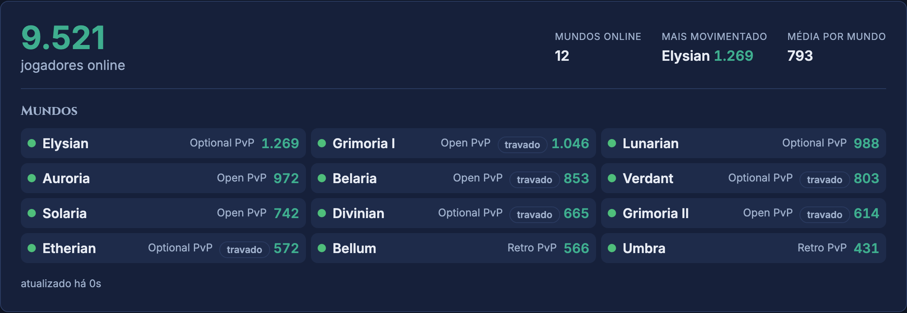
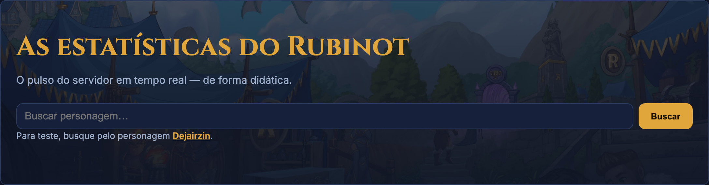

O primeiro fansite de estatísticas dedicado ao Rubinot.
Proposta de parceria & liberação de API
Total do servidor com atualização automática.
Status, tipo de PvP e selo de mundo travado.
Consulta por nome com os dados principais.
Contagem regressiva para o SS diário.
Se uma fonte falha, o bloco degrada sem quebrar a página.
Todo dado mostra de onde veio — nada de números "mágicos".



Ranking dos personagens por experiência.
Quem mais ganhou XP por dia ou período.
Boss e criatura do dia, com sprite.
Lista e detalhe das guilds do servidor.
Novidades oficiais do Rubinot na home.
Vitrine de parceiros ao vivo e no YouTube.
Hoje com dados de exemplo rotulados — a fonte real entra assim que a API for liberada, sem reescrever a página.
Nível e progresso, vocação, mundo, guild, vitais e o histórico de nicks e mundos — como o jogador espera de um site de estatísticas.
Gráfico de XP ao longo do tempo, ganho diário e a tabela dia a dia (nível, exp/h, tempo online) — o recurso mais pedido pela comunidade.
Melhor dia, média diária e previsão de nível — tudo em um lugar.
Client-side (fórmulas do jogo): entregam valor mesmo antes da liberação da API e transformam o fansite em rotina diária.
Um fansite ativo mantém a comunidade engajada e dá mais motivos para jogar.
Banner e CTAs levando ao site oficial e ao download.
Streamers/criadores, overlays para stream e conteúdo semanal com os dados.
Hospedagem e manutenção por nossa conta; pioneirismo entre os OTs.
rubinotstatistics@gmail.com
rubinot-statistic.vercel.app
Obrigado pelo trabalho de vocês no servidor!